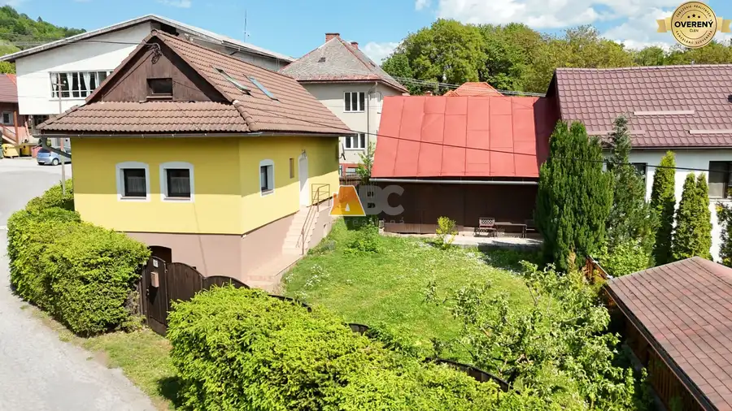
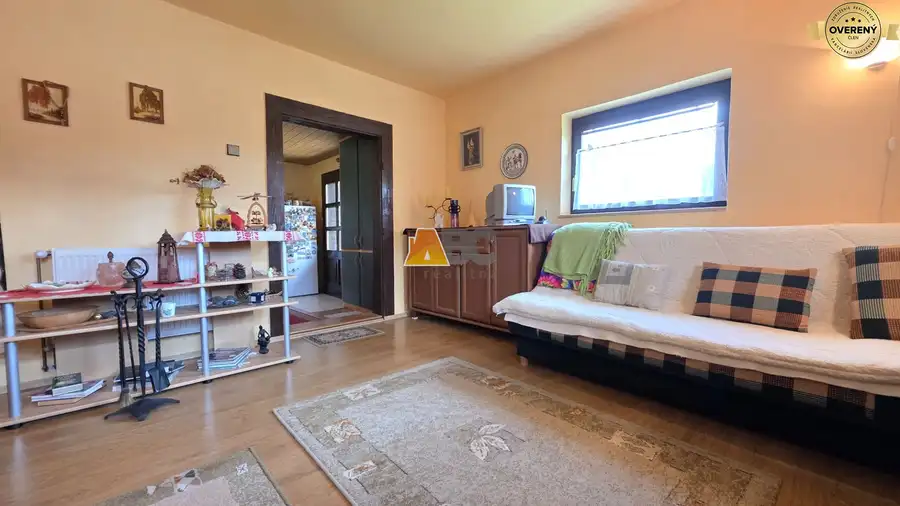
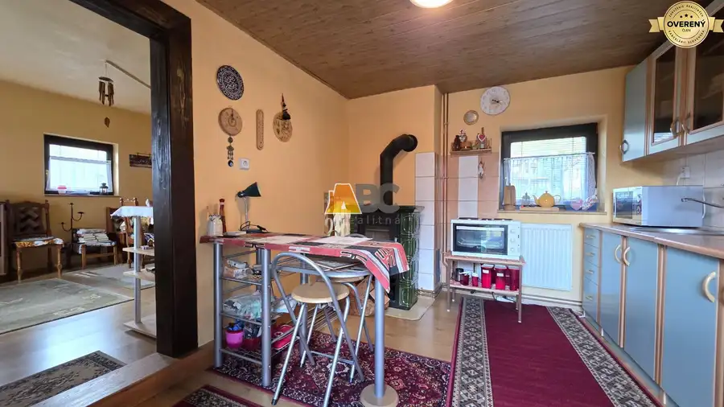
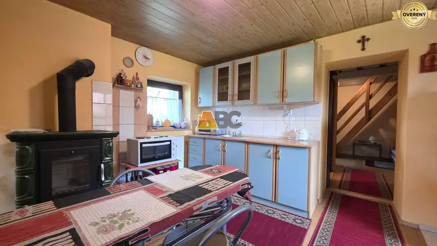
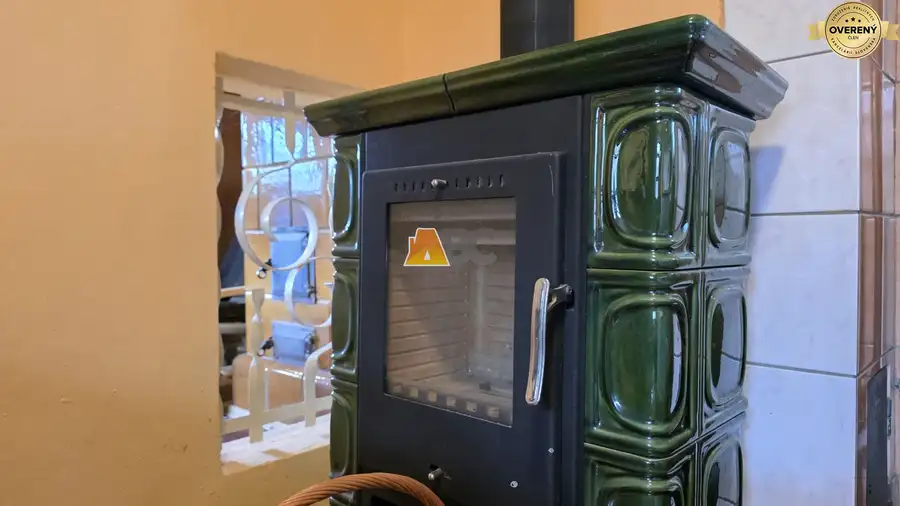
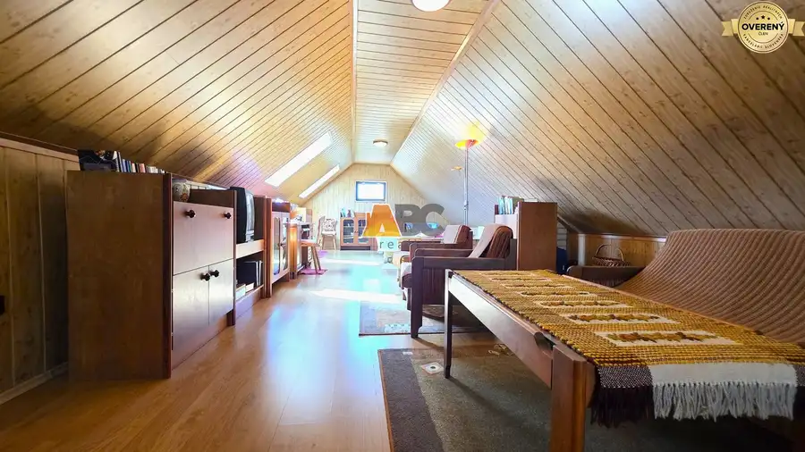

Rezervované: Rodinný dom v Podkoniciach
Podkonice






- Dispozícia4-izbový
- Plocha97.1 m²
- Poschodie0. z 2
- Stavčiastočne prerobený
- Vlastníctvoosobné
O nehnuteľnosti
ABC realitná exkluzívne ponúka na predaj rodinný dom v Podkoniciach.
Je ideálnou voľbou pre každého, kto hľadá únik z paneláku, viac slobody, súkromia a prírodu hneď za dverami.
HLAVNÉ BENEFITY
Životný priestor:
Premeňte víkendové úteky z bytu za trvalý pokoj vo vlastnom dome.
Finančná dostupnosť:
Splňte si sen o vlastnom dome bez státisícových hypoték.
Nízke prevádzkové náklady do 100€ mesačne:
Kompaktná stavba, ktorá nezaťaží váš rozpočet.
Príroda na dosah:
Zdravý životný štýl - prechádzky, turistika, cykloturistika a čistý vzduch.
Dostupnosť:
Banská Bystrica je vzdialená len 10 km.
DISPOZÍCIA A VARIABILITA
Prízemie:
Pivnica vhodná aj na dlhodobé skladovanie ovocia a zeleniny.
1. NP:
Obývacia izba, kuchyňa, chodba, kúpeľňa s WC a priechodná izba.
2. NP:
Veľkorysá spoločenská miestnosť s jedinečnou atmosférou. Priestor sa dá v prípade potreby rozdeliť na viac samostatných izieb.
TECHNICKÉ PARAMETRE
Kúrenie:
Elektrické vykurovanie kombinované s dvomi kachľovými pieckami (zdravé sálavé teplo).
Ohrev vody:
Elektrický bojler.
Stav domu:
Pred 12 rokmi prebehla rekonštrukcia – nová fasáda so zateplením, nová strecha a strešné okná. Dom je suchý a v dobrom technickom stave.
Príslušenstvo:
Na pozemku stojí samostatná stavba, ktorá slúži ako dielňa, sklad náradia alebo zázemie pre vaše koníčky.
Inžinierske siete:
Dom je napojený na elektriku, obecný vodovod a verejnú kanalizáciu - odpadajú vám starosti s vyvážaním žumpy.
LOKALITA
Obec Podkonice leží na rozhraní Zvolenskej kotliny a Starohorských vrchov. Priamo nad obcou sa nachádzajú Podkonické Pleše – horské lúky, ktoré ponúkajú nádherné panoramatické výhľady na Horehronie, Zvolenskú kotlinu a protiľahlé Veporské vrchy.
V Obci Podkonice je príjemná komunita ľudí, ktorí tu našli pokoj, bezpečné prostredie a slobodnejší život.
Neváhajte ma kontaktovať, kým je nehnuteľnosť ešte k dispozícii:
Parametre
- Rozloha pozemku
- 284 m²
- Zastavaná plocha
- 69 m²
- Celková rozloha
- 113.1 m²
- Úžitková plocha
- 97.1 m²
- Poschodie
- prízemie
- Počet poschodí
- 2
- Počet izieb
- 4
- Vlastníctvo
- osobné
- Stav
- čiastočne prerobený
- Status
- rezervované
- Odvoz odpadu
- áno
- Voda
- verejný vodovod
- El. napätie
- 230/400V
- Plyn
- nie
- Kanalizácia
- áno
- Kúpeľňa
- áno
- Vykurovanie
- vlastné – kombinované
- Pivnica
- áno
- Parkovanie
- áno
- Inžinierske siete
- áno
- Postavené z
- iné
- Zateplený objekt
- áno
- Strecha
- po rekonštrukcii
- Krb
- áno
- Energetický certifikát
- nie
- Okná
- drevené
- Orientácia
- južná
- Terén
- rovina
- Prístupová cesta
- asfaltová cesta
- Dátum zverejnenia
- 2026-05-22